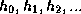
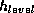
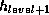

In linear hashing, we have a family of hash functions  with the property that each function's range is twice that of
the predecessor.
We keep track of two values: next and level. Each
record is first hashed using hash function . If the value
returned is less than next, then the function  is
used to compute the hash value. For insertion, the record is inserted
to the corresponding bucket. Overflow page is allocated if
necessary. For deletion, the corresponding bucket is
searched. If the record is found, then it's deleted. If an empty
overflow page
occurs, it's deallocated.
A split is triggered when an overflow page is allocated. The next bucket is split into two buckets and the records in that
bucket are redistributed to two buckets. The value of next is
incremented by 1 after the split. If the number of original buckets
has been doubled, we start a new round with level incremented by
1 and next set to 0.
A merge is triggered when an overflow page is deallocated. The last
bucket is merged with its image bucket. If The value of next is
not equal to 1, then it's decremented by 1 after the merge. Otherwise,
the value of level is decremented by 1 and next is set to
the last bucket.